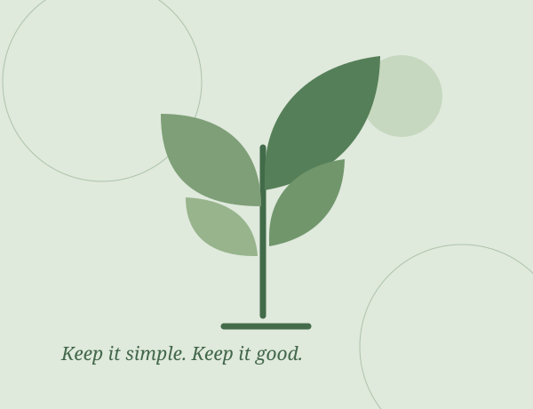

Keep the choice simple
A small launch collection makes it easier to find what fits your table.
OUR STORY
We believe a thoughtful pantry can start small—with familiar ingredients, a little curiosity and a conversation when you need one.

A GROWING PANTRY
Seedlys Natural is building a small collection of products for everyday kitchens. We’re beginning with garlic chips, blue tea and beetroot powder—three different ways to add a little character to your pantry.
Our first step is simple: share the product details directly, answer your questions and confirm every order with you before payment.
Explore the productsTHE SEEDLYS WAY
A small launch collection makes it easier to find what fits your table.
Talk to us directly about ingredients, pack sizes and availability.
We’ll confirm the total, delivery and payment details with you first.
FROM PUNE, WITH CARE